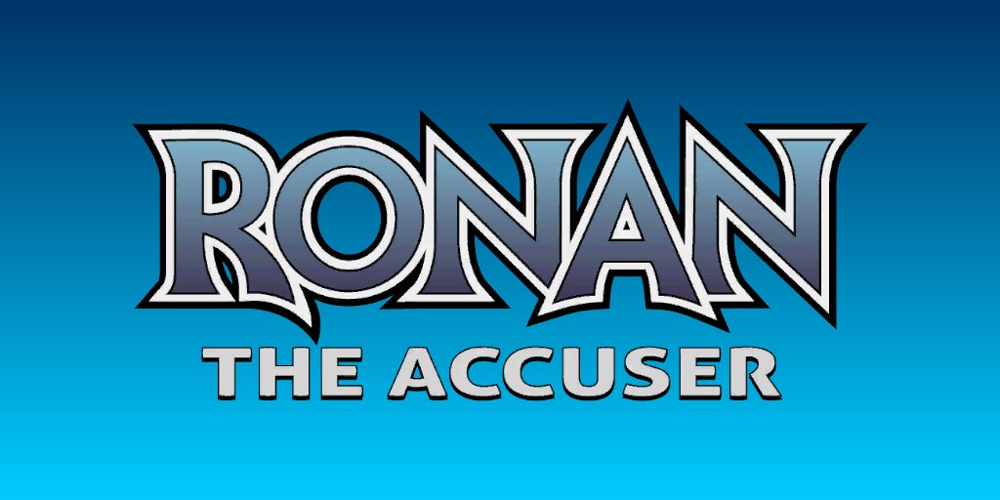
Ronan l'Accusateur (Terre-616)
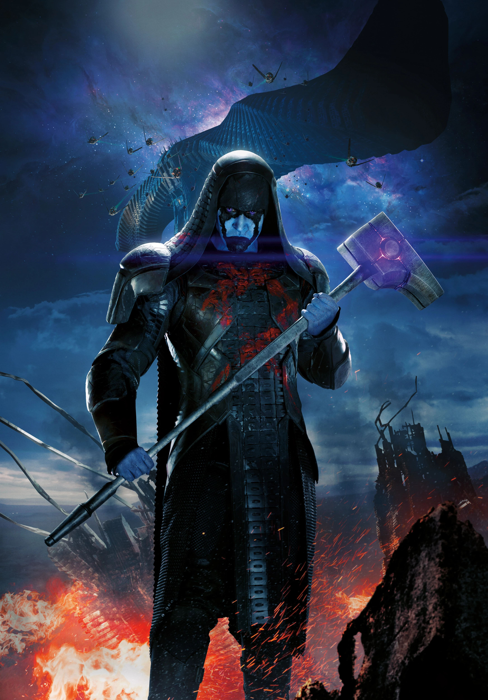
Origines :
Aristocrate né sur la planète Hala, Ronan appartient à l'espèce des Kree, une race extraterrestre militariste.
Après ses études, Ronan fut enrôlé dans le Corps des Accusateurs Publics Kree, le principal corps de maintien de l'ordre de l’empire.
Il y fit ses preuves et gravit rapidement les échelons.
Avant de devenir Accusateur, Ronan avait entretenu une relation intime avec Una-Rogg, fille de Yon-Rogg, mais ils y mirent fin après qu'elle eut failli le tuer en activant subtilement son pouvoir d'absorption de vie.
Lors d'un incident frontalier, il empêcha une flotte de vaisseaux Skrulls de pénétrer dans l'espace Kree.
De ce fait, il fut nommé Accusateur Suprême de l'Empire Kree, ce qui le chargea de faire respecter les lois et les décrets Kree, le plaçant juste après l'Intelligence Suprême et le Ministre Impérial dans la hiérarchie Kree.
En tant que membre de l'aristocratie Kree (les Kree à la peau bleue), il n'appréciait pas de recevoir des ordres de l'Intelligence Suprême.
Il tenta de déclencher une guerre civile qui fut rapidement déjouée, suite à quoi il reprit ses fonctions.
Il fit la rencontre des héros de la Terre lorsque les Quatre Fantastiques vainquirent la sentinelle Kree n°459.
L’Intelligence Suprême envoya Ronan juger les Quatre Fantastiques pour ce crime, mais malgré son immense pouvoir, l'équipe de super-héros parvint à le repousser, le forçant à battre en retraite.
Suite à ça, le capitaine Kree Mar-Vell fut envoyé infiltrer la Terre, sous la supervision de Ronan.
Cependant, Mar-Vell se pris d'affection pour les humains, et décida de rester sur Terre, ce qui mena Ronan à l'affronter à plusieurs reprises.
Il planifiera secrètement de renverser le chef Kree, l'Intelligence Suprême, avec son premier ministre Zarek, croyant que l'Empire ne devait pas être dirigé par une entité non-humanoïde, mais il a été arrêté par Captain Mar-Vell et fut incarcéré.
Durant la guerre Kree-Skrulls, il s'échappera de sa prison et mena un nouveau coup d'état contre l'Intelligence Suprême lorsque des hostilités éclatèrent avec les Skrulls.
Cependant, il continua de servir l'empire Kree, sous l'emprise mentale de l'Intelligence Suprême, affrontant Mar-Vell à de nombreuses reprises.
Il recouvra ensuite la raison et reprit son poste d'Accusateur Suprême.
Lorsqu' Annihilus lança sa Vague d'Annihilation à travers la galaxie, Ronan fut piégé et déchu de son titre d'Accusateur par la Maison Fiyero.
Il rechercha le seul témoin, Tana Nile, membre des Grâces de Gamora, mais malheureusement, cette dernière fut tuée par la Vague d'Annihilation avant même que Ronan ne puisse découvrir celui qui l'avait piégé.
Les Kree au pouvoir ignoraient encore tout de la menace que représentait Annihilus, ignorant les avertissements de Ronan.
Ronan a ensuite rejoint le Front uni aux côtés de Nova sur le front contre la Vague d'Annihilation, de nombreux soldats Kree à ses côtés.
Il finit par retourner sur Hala avec son ennemi juré Kl'rt, le Super-Skrull pour détrôner la Maison Fiyero qui projetait de s'allier à Ravenous et Annihilus.
Après avoir éliminé la Maison Fiyero, Ronan tenta de localiser l'Intelligence Suprême, mais découvrit que Fiyero l'avait lobotomisée.
Par compassion, il acheva la force Suprême et quitta la chambre sous l'acclamation du peuple Kree, l'acclamant à l'unanimité comme leur nouvel empereur.
Ravenous revint plus tard sur Hala avec une force accrue, et Ronan mena une attaque violente contre sa flotte, décimant ainsi les forces d'Annihilation.
Après la destruction massive de la Vague d'Annihilation par Galactus, Ronan participa à la négociation d'un traité entre le Front Uni et Ravenous, par lequel certains territoires Kree et l'intégralité de l'ancien empire Skrull durent cédés afin de mettre fin aux hostilités.
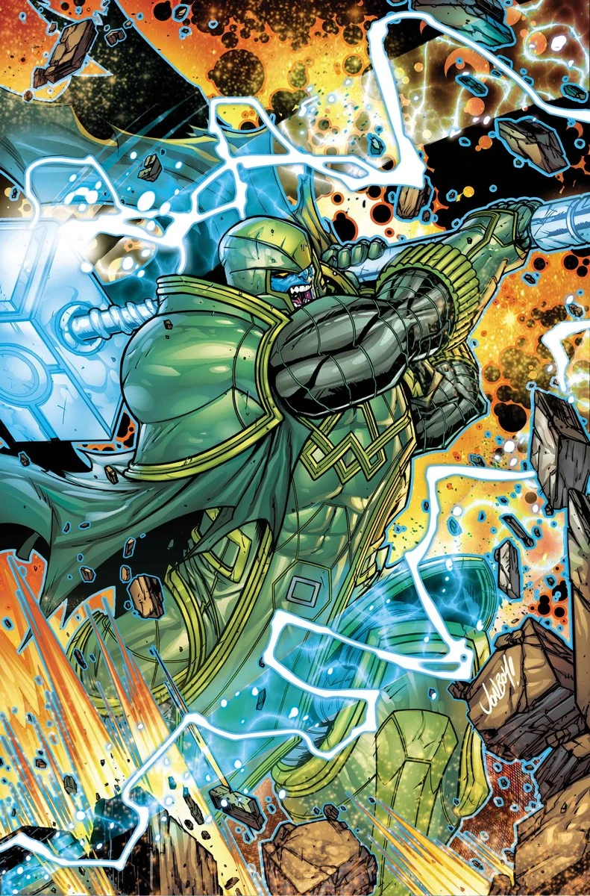

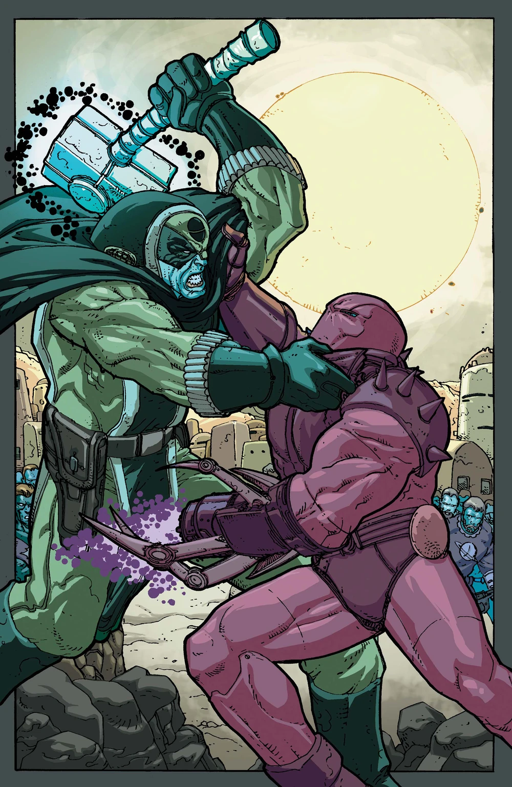
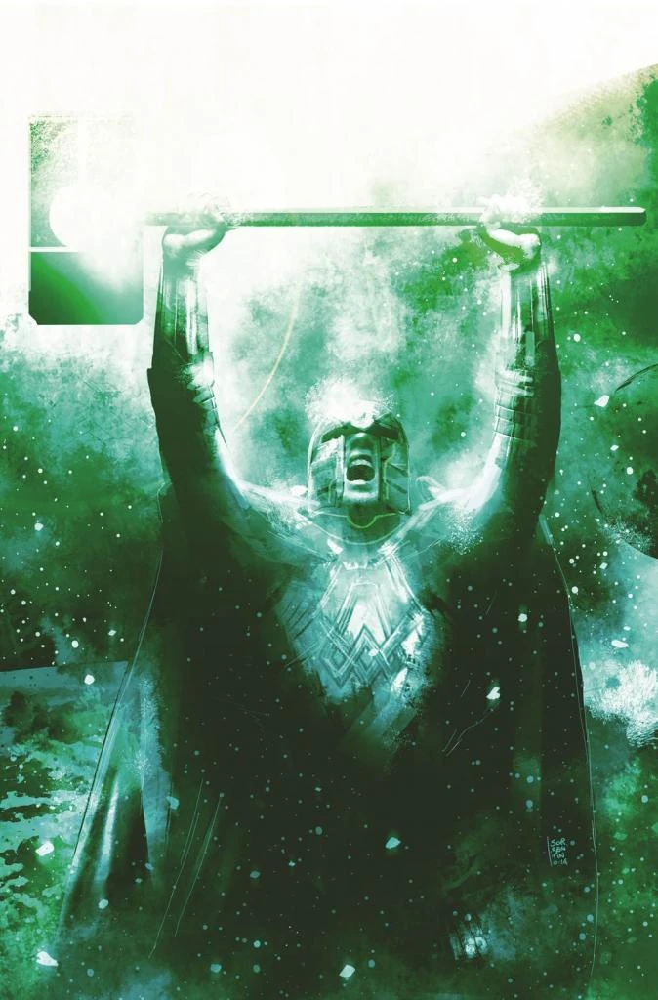
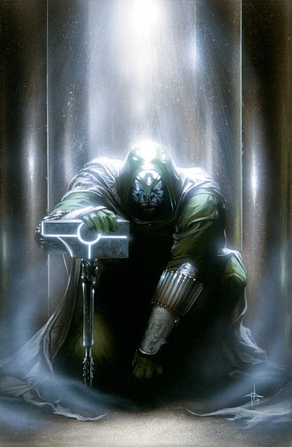
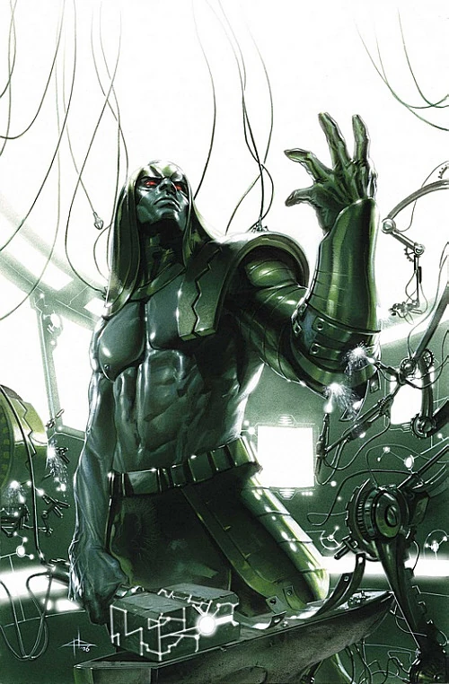

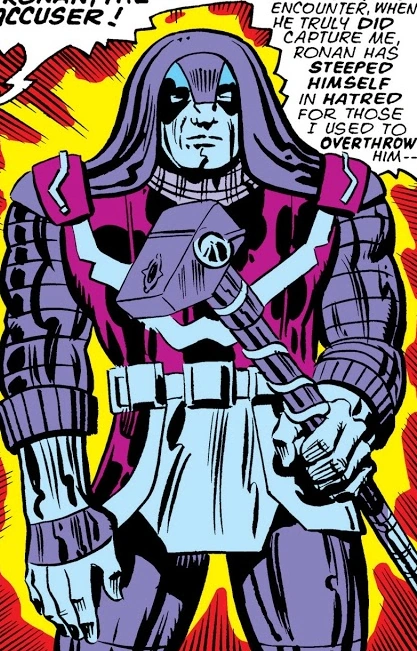
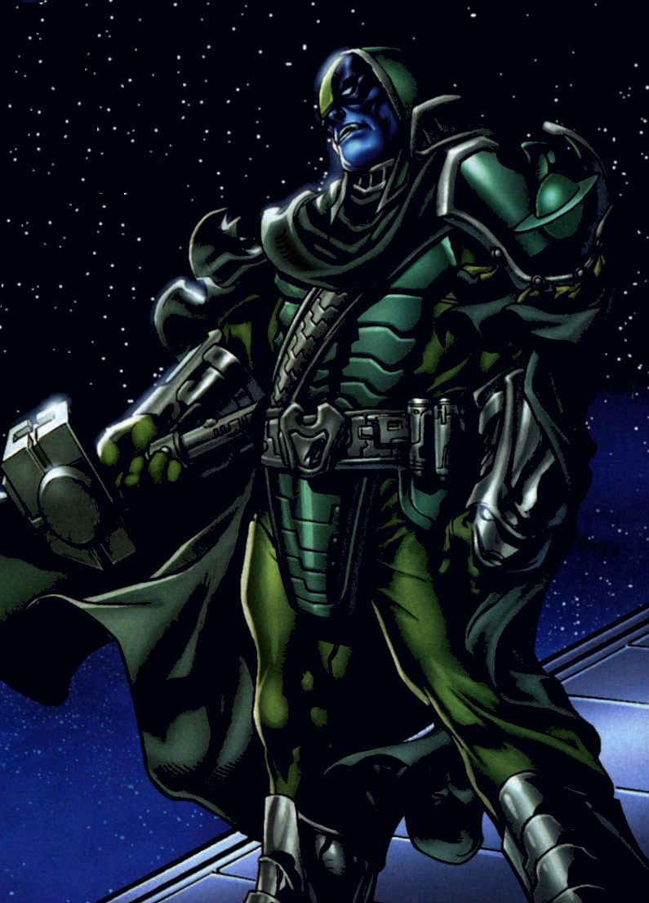
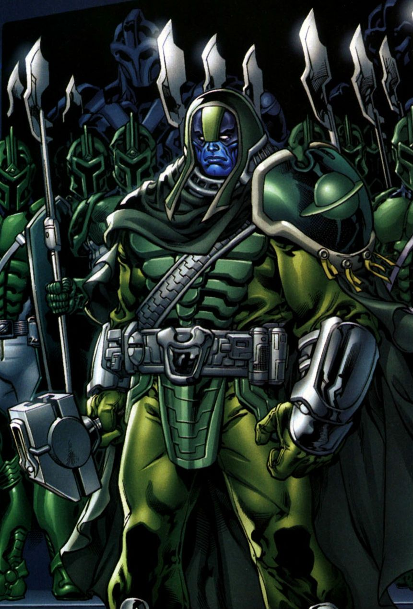
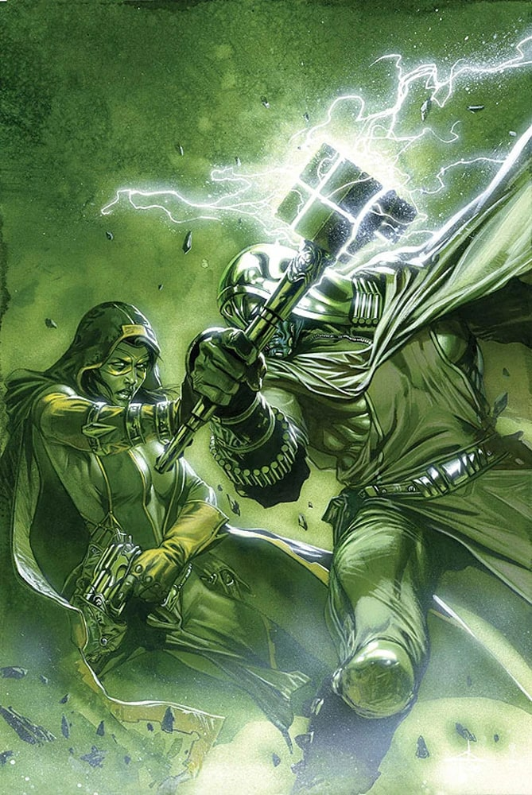
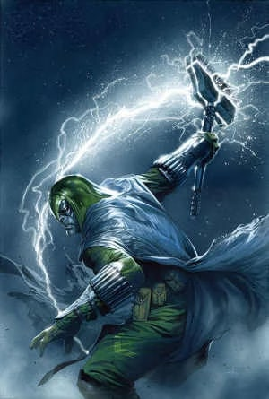
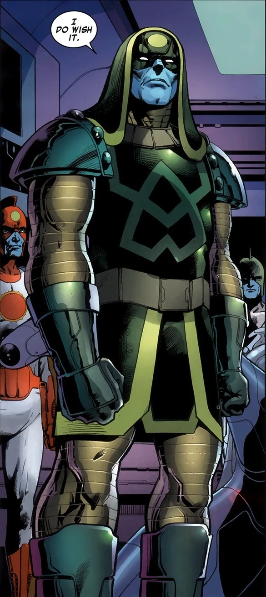
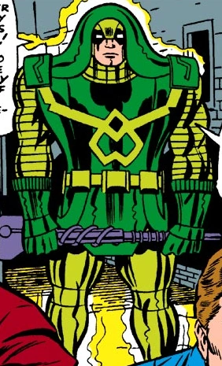
Capacités :
En tant que Kree, Ronan possède une force, une vitesse, une endurance et des réflexes surhumains.
C'est un soldat parfaitement entraîné et très bon stratège.
Il fait partie des meilleurs combattants de l'empire Kree.
Son armure cybernétique le protège des températures extrêmes, et est très résistante aux chocs physiques et aux lasers.
Elle est aussi équipée d'un appareil de camouflage.
Il possède un marteau de guerre à deux mains, appelé l' « Arme Universelle ».
Cette arme lui permet de manipuler l'énergie cosmique, émettre de puissantes rafales d'énergie, ré-arranger la matière, créer de puissants champs de force ou encore voler dans les airs.

Apparence :
Ronan est très grand et imposant, avec une musculature massive.
Il possède un heaume massif vert foncé, à la forme rectangulaire encadrant son visage et descendant parfois jusqu'aux épaules.
Il porte une armure lourde de la même couleur, souvent décorée de symboles kree et de détails technologiques.
Cette armure est le symbole des Accusateurs Suprêmes Kree.
En tant qu'aristocrate Kree, Ronan possède une peau bleue.
Il manie un marteau à deux mains, autant symbole de son rang qu'un outil de jugement.
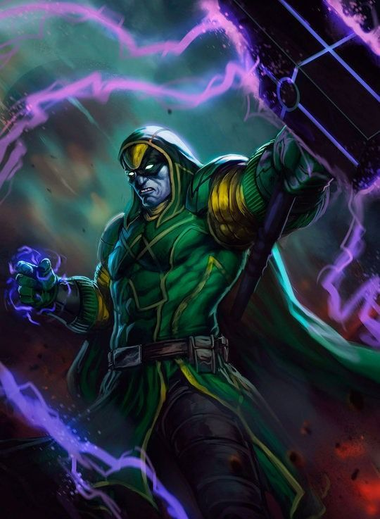
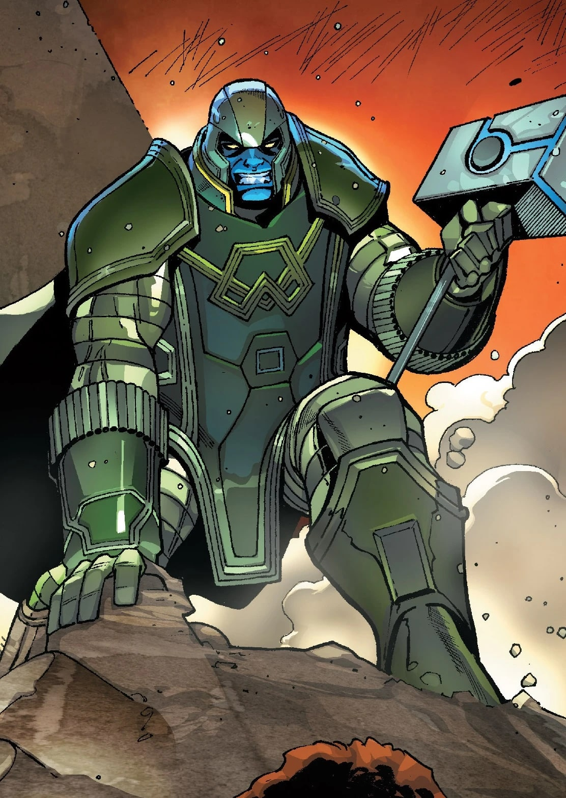